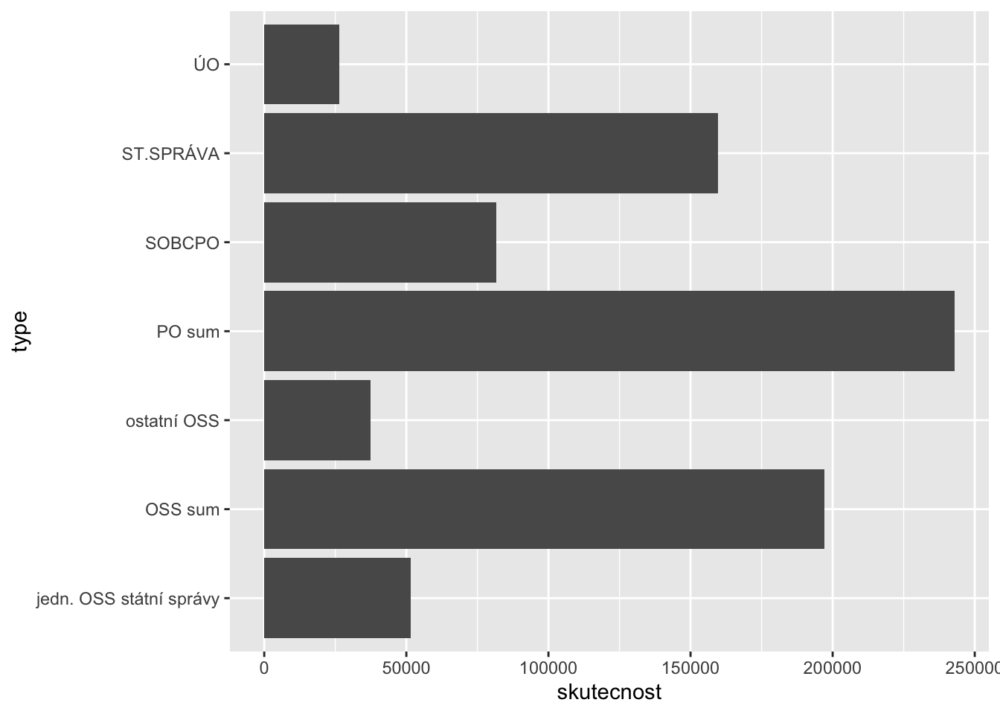
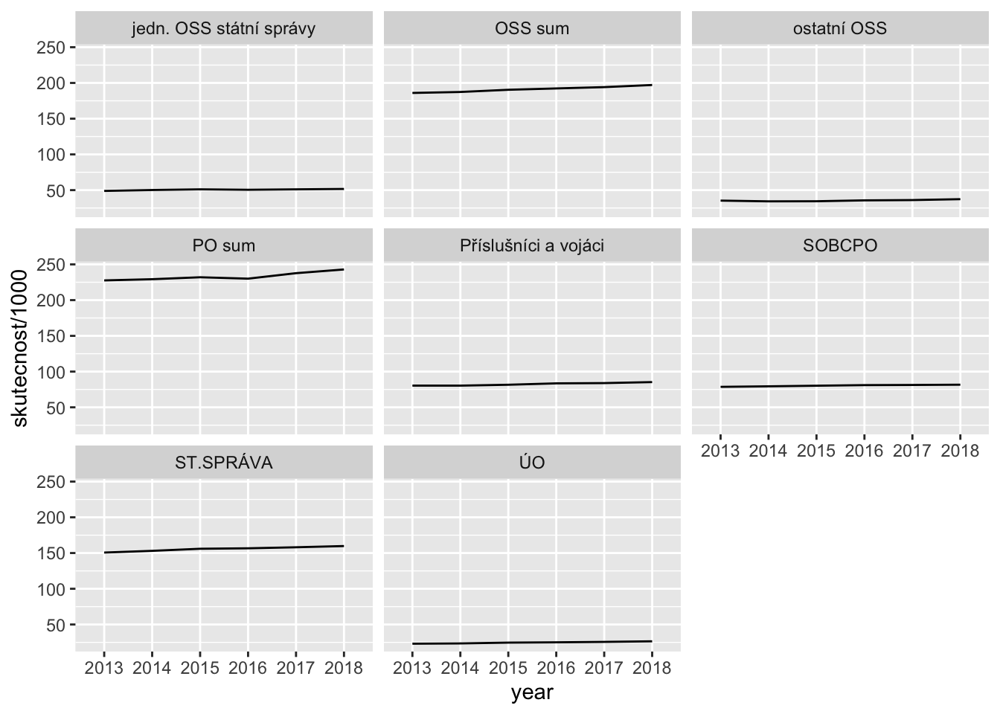
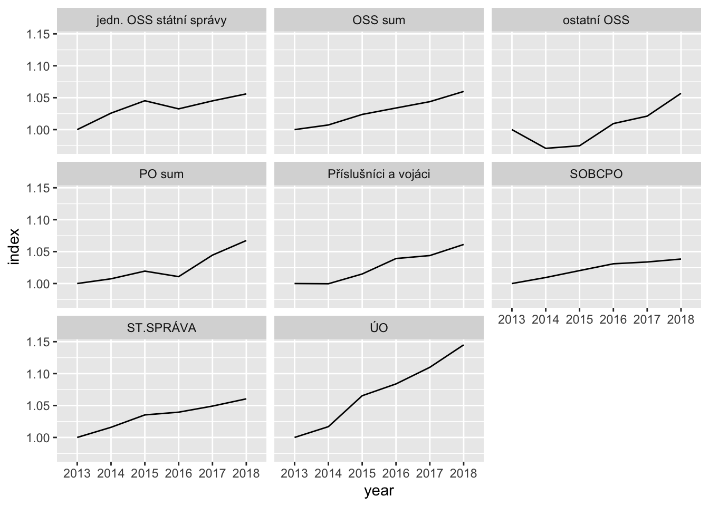
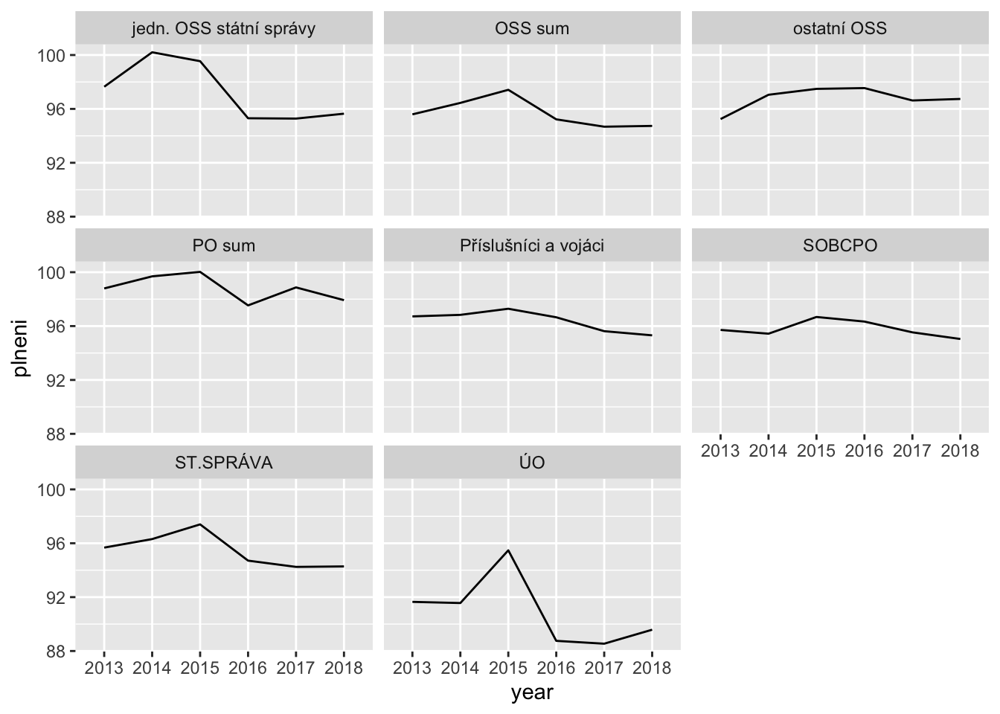

knitr::opts_chunk$set(echo = T, warning = F, message = F)
library(readr)
library(dplyr)
library(ggplot2)
library(tidyr)Počty úředníků: 2013-2018
Basic counts by group
Table
dt %>%
filter(kap_num == "C E L K E M" & indicator == "count" &
year %in% c(2013, 2018)) %>%
filter(!(type %in% c("PO sum", "Příslušníci a vojáci"))) %>%
mutate(skutecnost = (round(skutecnost)/1e3) %>% round(1)) %>%
select(type, skutecnost, year) %>%
pivot_wider(names_from = year, values_from = skutecnost) %>%
select(type, `2013`, `2018`) %>% knitr::kable()| type | 2013 | 2018 |
|---|---|---|
| ÚO | 23.1 | 26.5 |
| jedn. OSS státní správy | 48.9 | 51.6 |
| SOBCPO | 78.6 | 81.7 |
| ST.SPRÁVA | 150.7 | 159.8 |
| ostatní OSS | 35.3 | 37.4 |
| OSS sum | 186.0 | 197.1 |
159.8 - 26.5 - 81.7[1] 51.6Chart
dt %>%
filter(kap_num == "C E L K E M" & indicator == "count" & year == 2018) %>%
filter(!(type %in% c("Příslušníci a vojáci"))) %>%
# mutate(skutecnost = (round(skutecnost)/1e3) %>% round(1)) %>%
# select(type, skutecnost)
select(type, skutecnost) %>% ggplot() + geom_col(aes(type, skutecnost)) +
coord_flip()
Over time
absolutes
dt %>%
filter(kap_num == "C E L K E M" & indicator == "count") %>%
ggplot() +
geom_line(aes(x = year, y = skutecnost/1e3, group = type)) +
facet_wrap(~type)
Change from 2013 base
dt %>%
filter(kap_num == "C E L K E M" & indicator == "count") %>%
group_by(type) %>%
arrange(year) %>%
mutate(index = skutecnost/first(skutecnost)) %>%
ggplot() +
geom_line(aes(x = year, y = index, group = type)) +
facet_wrap(~type)
Plan vs. reality
dt %>%
filter(kap_num == "C E L K E M" & indicator == "count") %>%
ggplot() +
geom_line(aes(x = year, y = plneni, group = type)) +
facet_wrap(~type)
dt %>%
filter(kap_num == "C E L K E M" & indicator == "cost") %>%
filter(year == 2018) %>%
select(rozp, skutecnost, year, type) %>%
mutate_at(vars(skutecnost, rozp), ~(./1e9) %>% round(1))# A tibble: 8 x 4
rozp skutecnost year type
<dbl> <dbl> <chr> <chr>
1 16.2 15.9 2018 ÚO
2 20.8 21.1 2018 jedn. OSSstátní správy
3 43.6 43.7 2018 SOBCPO
4 80.7 80.7 2018 ST.SPRÁVA
5 18.3 18.4 2018 ostatní OSS
6 99 99.1 2018 OSS sum
7 87.4 87.9 2018 PO sum
8 43.5 43.5 2018 Příslušníci a vojáci